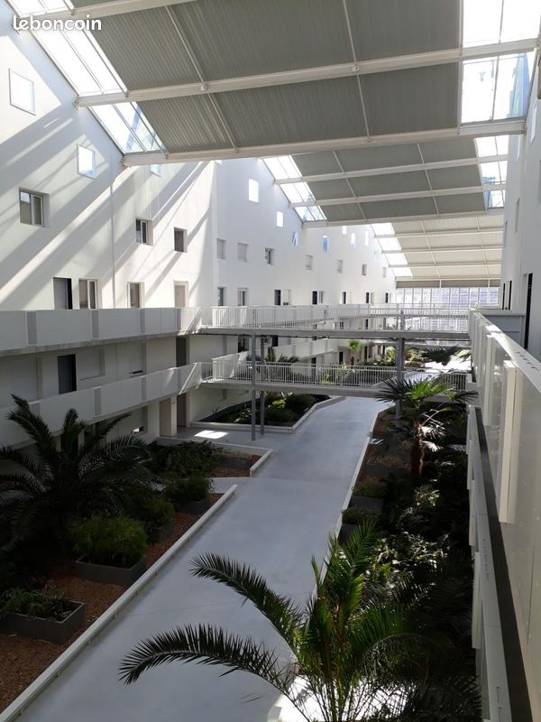

Duplex T4 avec balcon terrasse et parking - Bordeaux Maritime
Bacalan, à proximité des commerces et transports ligne B rue Achard, quartier Bordeaux Maritime, Bordeaux 33300

Informations
- Statut
- En cours
- Adresse
- Bacalan, à proximité des commerces et transports ligne B rue Achard, quartier Bordeaux Maritime, Bordeaux 33300
- Bien
- Duplex T4 avec balcon terrasse et parking
- Année
- 2014
- Exposition
- Ouest
- Vendeur
- CDC HABITAT VENTES
- Téléphone
- +33 5 17 88 09 80
- Date
- 2026-06-14
Description
Suivi
| Date | Historique |
|---|---|
| 2026-06-26 | Photo reçues, visite le 08/07 à 13h |
| 2026-06-22 | Centrale contactée. Le commercial, Julien Romain, est censé me contacter |
Évolutions
| Date | Modifications |
|---|---|
| 2026-06-21 | Mensualité ajoutée : 1216 |
SANS HONORAIRES. BACALAN - Dans immeuble récent à proximité des commerces et transports (ligne B rue Achard), bel appartement de quatre pièces en duplex situé au 4ème étage avec ascenseur offrant : une entrée, séjour-cuisine, trois chambres, salle de bain, salle d'eau, deux wc, balcon et terrasse. Appartement vendu avec un emplacement de stationnement. Vente directe propriétaire. Lot soumis à la copropriété. Nombre de lots dans la copro : 200 Quote-part de charges annuelles : 3600€ (chauffage compris). Pas de procédure en cours. Les informations sur les risques auxquels ce bien est exposé sont disponibles sur le site Géorisques : www. georisques.gouv.fr Référence à rappeler lors de nos échanges : 5997 - 260957 Les informations sur les risques auxquels ce bien est exposé sont disponibles sur le site Géorisques : www.georisques.gouv.fr Référence à rappeler lors de nos échanges : 5997 - 260957 Les informations sur les risques auxquels ce bien est exposé sont disponibles sur le site Géorisques : www.georisques.gouv.fr